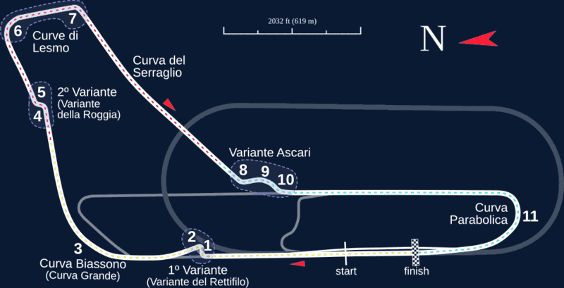
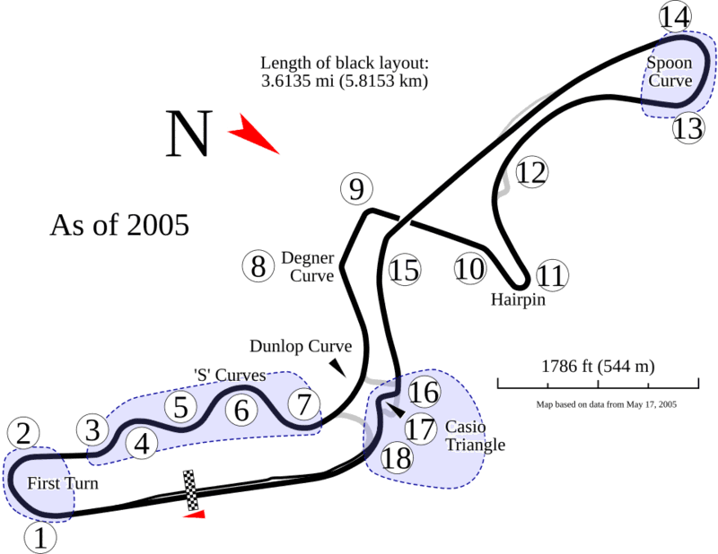

Трассы

01
Монца
Рекорд круга: 1:21.046
Р. Баррикелло, Ferrari, 2004
Макс. скорость: 342 км/ч
Открыть телеметрию →

02
Спа-Франкоршам
Рекорд круга: 1:44.701
С. Перес, Red Bull, 2024
Макс. скорость: 330 км/ч
Открыть телеметрию →

03
Сузука
Рекорд круга: 1:30.983
Л. Хэмилтон, Mercedes, 2019
Макс. скорость: 318 км/ч
Открыть телеметрию →

04
Сильверстоун
Рекорд круга: 1:27.097
М. Ферстаппен, Red Bull, 2020
Макс. скорость: 325 км/ч
Открыть телеметрию →

05
Нюрбургринг Нордшляйфе
Рекорд круга: 5:19.546
Т. Бернхард, Porsche 919 Evo, 2018
Макс. скорость: 300 км/ч
Открыть телеметрию →

06
Монако
Рекорд круга: 1:12.909
Л. Хэмилтон, Mercedes, 2021
Макс. скорость: 290 км/ч
Открыть телеметрию →